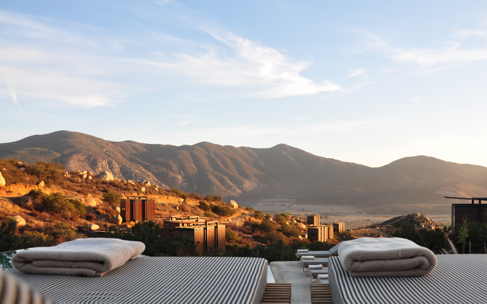
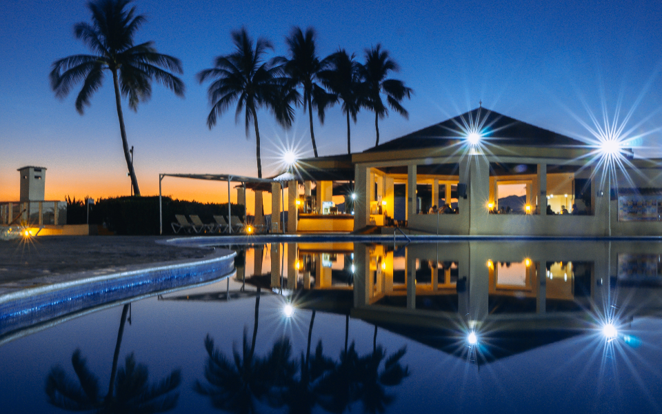
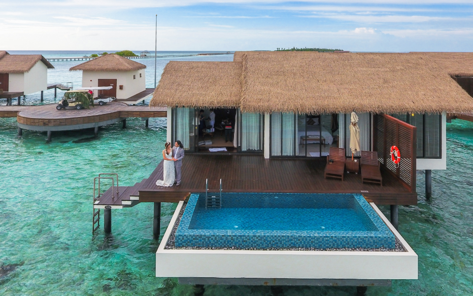

Pierre Dubois
Vigneron passionné — Domaine des Coteaux, Condom
« Chaque bouteille raconte l'histoire de notre terroir. Avec Tributrip, je partage cette passion avec des voyageurs curieux qui deviennent des amis. »
Découvrez la France autrement avec Tributrip. Rencontres authentiques, saveurs locales et territoires préservés du Gers et d'Occitanie.

Immergez-vous dans l'univers des vignerons passionnés et découvrez les secrets du terroir gascon.
Découvrir
Promenades douces à travers les paysages vallonnés, moments de contemplation et de ressourcement.
Découvrir
Parcourez les chemins de campagne à vélo, entre bastides et villages authentiques.
DécouvrirAuthenticité · Connexion · Découverte · Sérénité · Curiosité
Nous privilégions le slow travel, les rencontres vraies et les expériences qui respectent le territoire.
Rencontrez les hommes et femmes qui partagent leur savoir-faire et accueillent nos voyageurs.
Vigneron passionné — Domaine des Coteaux, Condom
« Chaque bouteille raconte l'histoire de notre terroir. Avec Tributrip, je partage cette passion avec des voyageurs curieux qui deviennent des amis. »

Fermière bio — Ferme du Bonheur, Auch
« Notre ferme est un lieu de vie où chaque légume pousse avec amour. Recevoir les voyageurs Tributrip, c'est partager notre art de vivre. »
Potier artisan — Atelier Terre & Feu, Lectoure
« L'argile du Gers a des secrets que je transmets depuis 30 ans. Mes mains guidées par la tradition créent des pièces uniques. »
Apicultrice — Ruchers d'Armagnac, Eauze
« Mes abeilles butinent les fleurs sauvages de Gascogne. Leur miel doré porte en lui toute la douceur de nos paysages. »
Découvrez les histoires derrière nos expériences.




Écrivons votre voyage — réservez une discussion ou envoyez-nous les grandes lignes de votre projet.